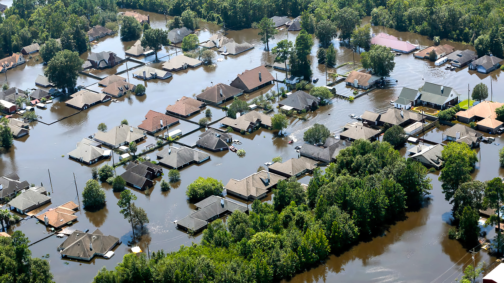
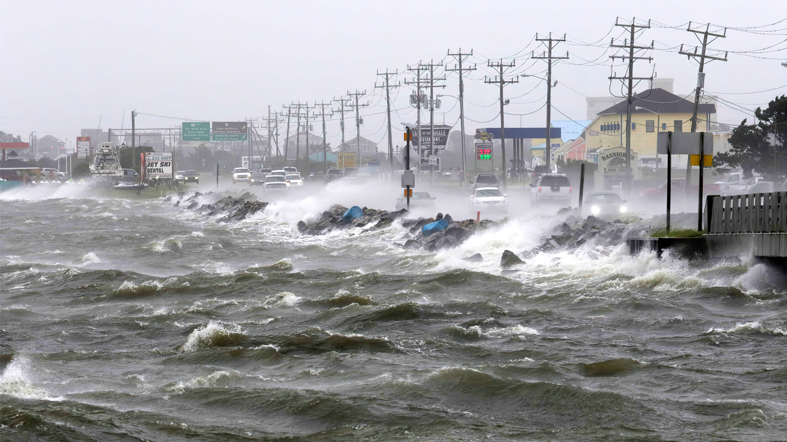
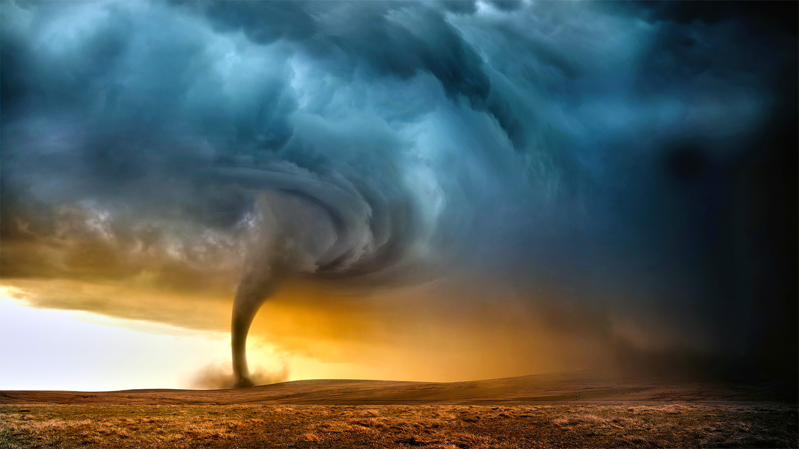

Since 1880, sea levels have risen about 9 inches. A third of that increase came about in the
last twenty-five years. Simply put, it’s caused by global warming. Titanic glaciers & ice sheets are melted into water while current sea water thermally
expands as it warms. This tremendous change in sea level has some devastating effects such as:

Credit: South Carolina National GuardCredit: David Merron/Getty Images
Powerful Floods
Deadlier & More Destructive Storms
Destruction of Infrastructure
Eradication of Coastal Ecosystems
Shoreline Erosion
40% of the United States population lives in a coastal area. Until climate change is stopped,
they will continuously face economically catastrophic floods, hurricanes, and storms.
Source: Lindsey, Rebecca. “Climate Change: Global Sea Level: NOAA Climate.gov.”
Climate Change: Global Sea Level | NOAA Climate.gov, 14 Aug. 2020,
www.climate.gov/news-features/understanding-climate/climate-change-global-sea-level
Extreme Weather
For the past few decades, the world has seen an uptick in cataclysmic weather events.
Every few months brings news of a raging storm, a draining drought, or a crushing hurricane. It’s climate change that has caused these alterations
in weather conditions. The process of global warming triggers a vast amount of adjustments to Earth’s atmosphere, leading to:

Credit: Top Copeland/AP

Caption: Tornado Ravaging Open-Field
Paralyzing Heat Waves
Extreme Droughts
Heavy Downpours
Strong Winter Snowfalls
Hurricanes & Storms
Rushing Floods
Source: U.S. Global Change Research Program. “Extreme Weather.”
National Climate Assessment, 2014,
nca2014.globalchange.gov/highlights/report-findings/extreme-weather
Ocean Acidification
For the past 250 years, the ocean has been a powerful barrier against climate change.
It has absorbed about 30% of all carbon dioxide emissions and without it, we would have faced even greater global warming consequences.
But that process acidifies our seas, turning them into toxic environments. It leads to poisonous effects like:
Credit: Woods Hole Oceanographic Institution
Destruction of Oceanic Animals & Environments
Reduction of Food Supplies due to Toxic Ecosystems
Erosion of Coral Reefs, Affecting 500 Million People
Elimination of one of the largest habitats on Earth
(Monumental effect on those who depend on aquatic life)
Source: NOAA, and U.S. Department of Commerce. “Ocean Acidification.”
Ocean Acidification | National Oceanic and Atmospheric Administration, Apr. 2020,
www.noaa.gov/education/resource-collections/ocean-coasts/ocean-acidification
Soaring Temperatures
Global warming is simply that, the warming of the Earth.
As carbon dioxide emissions increase, more heat is captured into the atmosphere, leading to a rise in temperatures.
Each year brings a record for being the hottest the world has ever faced. This has obvious and clear side effects, such as:
Credit: John McColgan/Bureau of Land ManagementCredit: Shuttershock
Dirtier Air
Higher Death Rates (No A/C)
Wildlife Extinction
More Acidic Oceans
Larger Wildfires
Higher Sea Levels
Source: Denchak, Melissa. “Are the Effects of Global Warming Really That Bad?” NRDC, 16 Mar. 2016,
www.nrdc.org/stories/are-effects-global-warming-really-bad


.jpg)